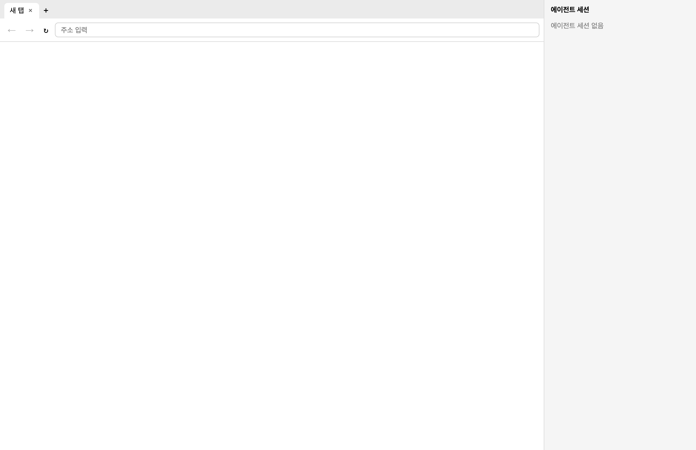
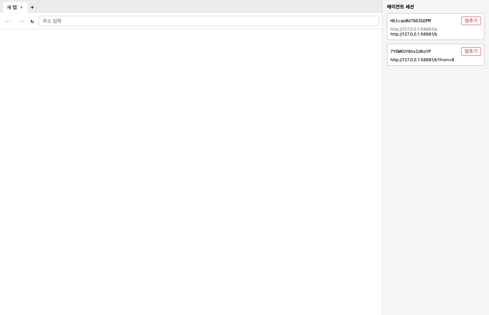
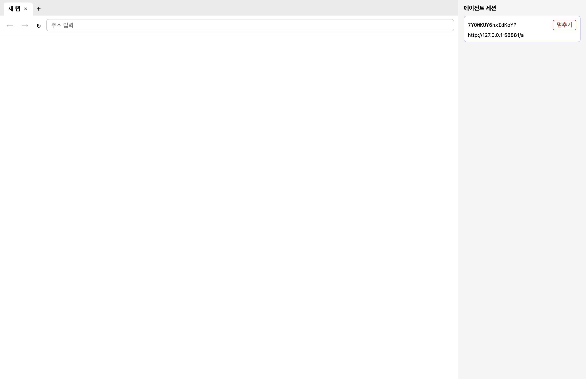
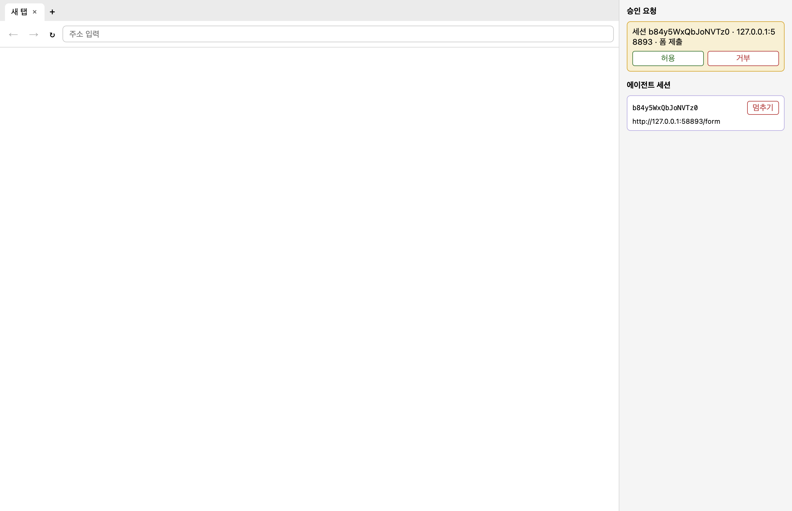
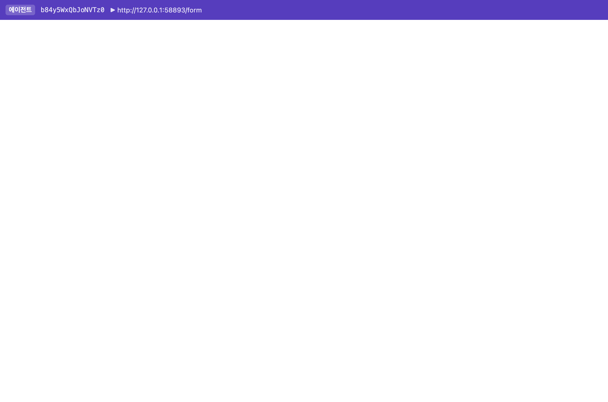
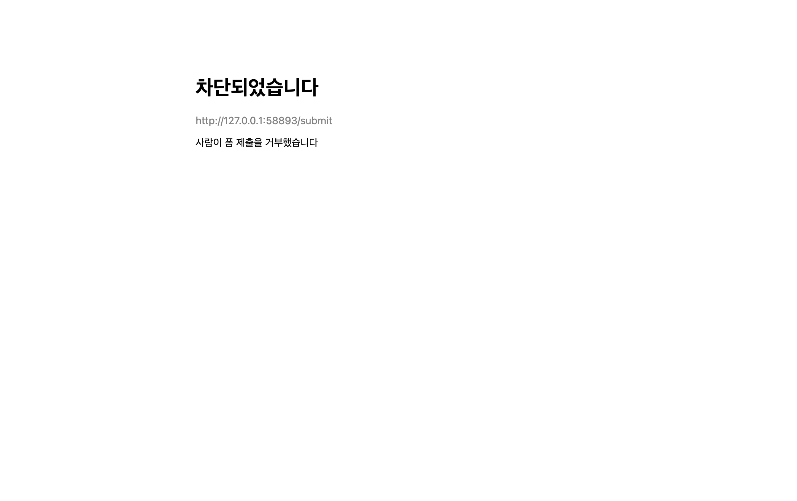

에이전트 브라우저 검사 결과
2026-11-14 · 사내용 AI 에이전트 전용 브라우저(Electron) · 작업 20261114-agent-browser
결론 통과
처음에 정한 완성 조건 13개를 모두 만족합니다. 검사는 다섯 번 했습니다. 앞의 네 번은 매번 새로운 보안 구멍이 나와서 고쳤고, 다섯 번째 검사에서 더 이상 심각한 문제가 나오지 않았습니다.
코드는 feat/agent-browser 브랜치에 모두 저장되어 있습니다. 아직 어디에도 올리거나(push) 배포하지 않았습니다.
지금 하실 일
-
앱을 한 번 직접 켜 보세요 (5분)
터미널에서 프로젝트 폴더로 가서
npm start를 입력합니다. 검사는 창을 숨긴 채로 돌았기 때문에, 실제 화면은 아직 사람이 본 적이 없습니다. 아래 세 가지만 보시면 됩니다.- 브라우저 창이 하나 뜨고, 주소를 넣으면 사이트가 열리는가
- 오른쪽에 "에이전트 세션 없음"이 보이는가
- 회사 사이트에 로그인이 되는가
-
아래 "정하실 것" 두 가지에 답해 주세요
둘 다 제 추천은 "지금은 그대로 두고 기록만 남긴다"입니다. 추천대로 하시려면 대화창에 "추천대로"라고만 쓰시면 됩니다.
-
괜찮으면 대화창에
/aif-deliver를 입력하세요"마무리" 단계입니다. 배포는 하지 않습니다(이 앱은 내 Mac에서만 씁니다). 버전 번호와 사용법을 정리하고, 작업 기록을 닫습니다. 화면에 문제가 있었다면 이 단계 대신 무엇이 이상했는지 말씀해 주세요.
정하실 것 두 가지
1. 에이전트가 파일을 웹사이트에 올리는 기능을 둘까요?
지금은 에이전트가 웹페이지의 "파일 선택" 칸에 내 컴퓨터의 파일을 넣을 수 있습니다. 그래서 마음만 먹으면 내 파일을 다른 사이트로 보낼 수 있습니다.
추천: 그대로 둔다. 이 브라우저를 쓰는 에이전트(Claude Code)는 원래 내 컴퓨터 파일을 직접 읽을 수 있어서, 이 기능을 막아도 실제로 지켜지는 것이 거의 없습니다. 반대로 막으면 "파일 첨부" 같은 정상적인 작업을 시킬 수 없습니다.
2. 에이전트가 사이트에 "서비스 워커"를 설치하는 것을 막을까요?
서비스 워커는 웹사이트가 브라우저에 설치해 두는 작은 프로그램입니다. 에이전트가 어떤 사이트에서 이것을 설치하면, 나중에 내가 같은 사이트를 열었을 때 화면 내용을 바꿔 보여 줄 수 있습니다. 이렇게 보내는 제출은 승인 질문도 건너뜁니다.
추천: 지금은 "알려진 한계"로 기록만 하고, 실제로 써 보면서 필요하면 다음 작업에서 막는다. 막으면 일부 사이트(오프라인 지원 사이트 등)가 에이전트 창에서 제대로 안 열릴 수 있어서, 먼저 써 보고 정하는 편이 낫습니다.
무엇을 만들었나
- 사람 창: 주소창, 탭, 뒤로/앞으로/새로고침이 되는 기본 브라우저입니다. 오른쪽에 에이전트 목록과 승인 요청이 뜹니다.
- 에이전트 창: 에이전트마다 따로 열리는 보라색 머리줄의 창입니다. 사람 창과 로그인을 공유해서, 내가 로그인한 사이트를 에이전트도 그대로 씁니다.
- 여러 에이전트 동시 사용: 에이전트마다 자기 창만 보고 만질 수 있습니다. 다른 에이전트의 창이나 사람 창은 보이지 않습니다. 지금 쓰는 Claude in Chrome에서 불편했던 점이 바로 이것입니다.
- 승인 질문: 에이전트가 폼을 제출하거나 파일을 내려받으려 하면, 사람 창에 "허용/거부"가 뜹니다.
- 멈추기: 사람 창의 "멈추기" 버튼으로 에이전트를 바로 끊을 수 있습니다.
화면






검사용으로 창을 숨긴 채 찍은 화면입니다. 실제 창 모양은 "지금 하실 일" 1번에서 확인해 주세요.
완성 조건 13개 모두 통과
| 조건 | 확인한 내용 | |
|---|---|---|
| 1 | 창 분리 | 켜면 사람 창 하나, 에이전트를 부르면 에이전트 창이 따로 생긴다 |
| 2 | 로그인 공유 | 사람 창에서 로그인하면 에이전트도 로그인 상태. 앱을 껐다 켜도 유지 |
| 3 | 에이전트 연결 주소 발급 | 비밀번호(토큰)가 있어야 받을 수 있고, 에이전트마다 다른 비밀 주소 |
| 4 | 기존 도구로 조작 | chrome-devtools-mcp와 Playwright로 클릭·입력·화면 캡처 등이 된다 |
| 5 | 남의 탭이 안 보임 | 에이전트는 자기 탭만 보인다(다른 에이전트·사람 탭은 안 보임) |
| 6 | 남의 탭을 못 만짐 | 남의 탭에 붙으려 하면 거절. 새 탭·팝업은 자기 창에만 생긴다 |
| 7 | 사람 로그인 보호 | 에이전트가 쿠키·저장소를 지우는 명령을 보내도 거절되고 사람 로그인 유지 |
| 8 | 동시 사용 | 두 에이전트가 동시에 움직여도 서로 방해하지 않는다 |
| 9 | 멈추기·창 닫기 | 멈추면 그 에이전트만 끊기고 다른 에이전트는 계속 일한다 |
| 10 | 잘못된 접속 차단 | 토큰 없음·틀린 주소·다른 컴퓨터에서의 접속은 모두 거절 |
| 11 | 지켜보기 | 사람 창 오른쪽에 에이전트별 열린 주소와 멈추기 버튼 |
| 12 | 폼 제출 승인 | 에이전트의 폼 제출은 허용을 눌러야 서버에 간다. 거부하면 안 간다 |
| 13 | 다운로드 승인 | 에이전트의 다운로드는 허용해야 저장된다. 사람 다운로드는 묻지 않는다 |
자동 테스트 210개(작은 단위 146개, 앱을 실제로 띄우는 것 64개)가 이 조건들을 지킵니다. 일부러 코드를 망가뜨려 테스트가 알아채는지도 25가지로 확인했습니다.
검사를 다섯 번 한 이유
검사는 만든 과정을 모르는 별도의 검사자 둘이 했습니다. 하나는 조건대로 되는지를 보고, 다른 하나는 코드를 읽으며 허점을 찾았습니다. 앞의 네 번은 매번 "에이전트가 몰래 할 수 있는 일"이 새로 발견되어 고쳤습니다.
에이전트가 사람 로그인 쿠키를 지울 수 있었고, 다운로드 승인을 건너뛸 수 있었다 → 막음
가짜 응답으로 쿠키를 바꾸거나, 다운로드 직후 탭을 닫아 승인을 건너뛸 수 있었다 → 막음. 이때 "사이트 안에서 에이전트가 하는 행동까지는 못 막는다"로 범위를 정하셨다
성능 기록 기능으로 다른 탭 주소가 보였고, 특정 방식의 폼 제출이 승인을 건너뛰었다 → 에이전트가 쓸 수 있는 명령을 "실제로 필요한 것만"으로 줄임
에이전트가 브라우저 내부 페이지(chrome://)를 열어 사람 탭 주소를 볼 수 있었다 → 에이전트 탭은 일반 웹 주소만 열게 함
심각한 문제 없음 → 통과
알아 두실 한계
- 에이전트가 사이트 안에서 직접 하는 행동(로그아웃 버튼 누르기 등)은 사람 로그인에도 영향을 줍니다. 로그인을 공유하는 방식이라 막을 수 없습니다.
- 웹페이지가 화면 이동 없이 보내는 데이터(fetch 등)는 승인 질문 없이 나갑니다. 승인 질문은 보조 장치입니다. 중요한 건 사람이 지켜보고 멈추는 것입니다.
- chrome-devtools-mcp의 "창 크기 바꾸기"와 "성능 측정" 기능은 이 브라우저에서 막혀 있습니다. 화면 크기는 "emulate" 기능으로 바꿀 수 있습니다.
- macOS에서만 확인했습니다. Windows는 써 보신 뒤에 정하기로 했습니다.
- chrome-devtools-mcp를 쓸 때는
--no-usage-statistics --no-performance-crux를 붙이세요. 붙이지 않으면 사용 통계를 구글로 보냅니다.
나중에 고치면 좋은 것 급하지 않음
- 같은 이름의 파일을 동시에 두 번 내려받으면 하나가 덮어써질 수 있음
- 오래 켜 두면 내부 기록이 조금씩 쌓임(메모리)
- 에이전트 탭이 페이지를 못 열 때 보여 주는 오류 화면의 방식 정리
- 코드 안의 정리 거리 몇 가지(숫자 상수 이름 붙이기 등)
Electron 버전(45.3.2)이 최신 안정판인지는 제가 확인했고, 최신이 맞습니다.